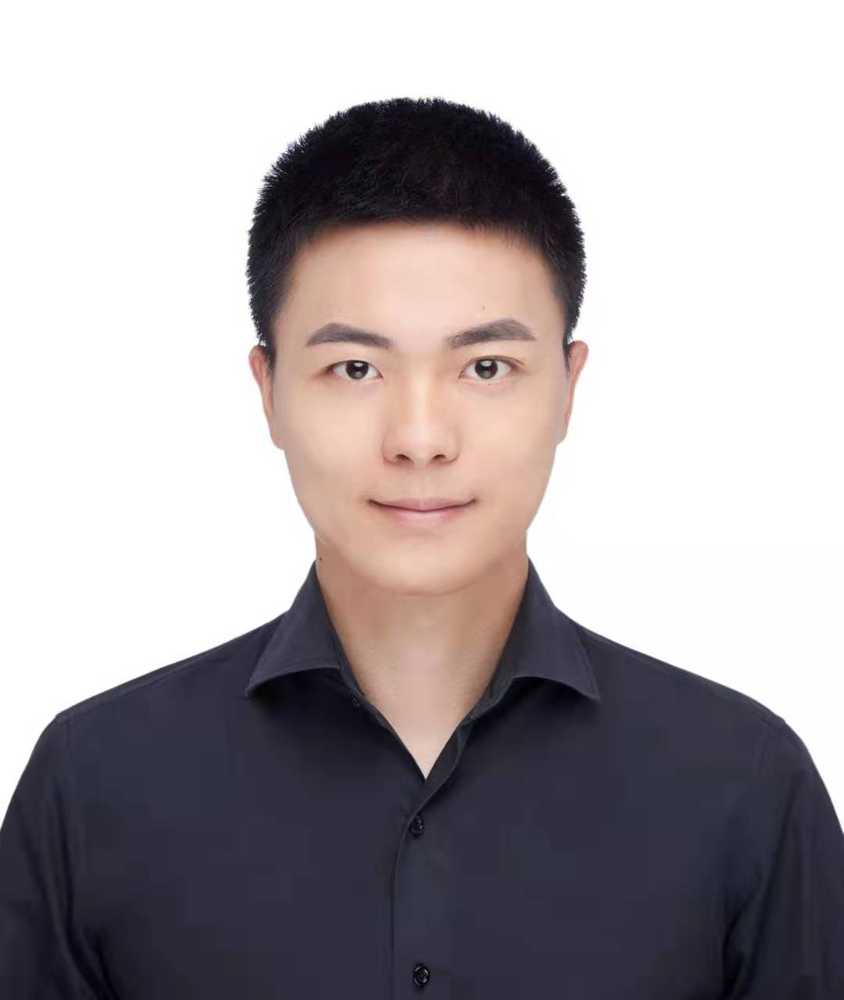

|
Wang Sun
Ph.D Student
Institute of Technical Physics
Department of Engineering Physics
Tsinghua University
Email: sunwangthu [at] gmail.com
|

|
Biography
I am a third-year PhD student of the Department of Engineering Physics in Tsinghua University and a member of the Lab of Institute of Technical Physics, under the supervision of Prof. Mingsheng Zhou. I got my Bachelor Degree of Engineering from the Department of Computer Science and Technology of Nanjing University in June 2019. I am currently a research intern at the Machine Learning Group of Microsoft Research Asia (MSRA), advised by Jindong Wang.
My research interests lie in semi-supervised learning, transfer learning and imbalanced learning.
Journal Papers
-
Exploiting Adapters for Cross-lingual Low-resource Speech Recognition.
Wenxin Hou, Han Zhu, Yidong Wang, Jindong Wang, Tao Qin, Renjun Xu and Takahiro Shinozaki.
IEEE/ACM Transactions on Audio, Speech and Language Processing 2022 (TALSP 2022).
[paper]
[code]
Conference Papers
-
Flexmatch: Boosting semi-supervised learning with curriculum pseudo labeling.
Bowen Zhang, Yidong Wang (co-first author), Wenxin Hou, Hao Wu, Jindong Wang, Manabu Okumura, and Takahiro Shinozaki.
Advances in Neural Information Processing Systems 2021 (NeurIPS 2021).
[paper]
[code]
-
Meta-Adapter: Efficient Cross-Lingual Adaptation With Meta-Learning.
Wenxin Hou, Yidong Wang, Shengzhou Gao and Takahiro Shinozaki.
IEEE International Conference on Acoustics, Speech, and Signal Processing 2021 (ICASSP 2021).
[paper]
[code]
Projects
-
TorchSSL
500+ stars and 50+ forks!
TorchSSL is an all-in-one toolkit based on PyTorch for semi-supervised learning (SSL). Currently, we implmented 9 popular SSL algorithms to enable fair comparison and boost the development of SSL algorithms.
Yidong Wang, Hao Wu, Bowen Zhang, Wenxin Hou, Yuhao Chen and Jindong Wang.
[code]
Preprints
-
Margin Calibration for Long-Tailed Visual Recognition.
Yidong Wang, Bowen Zhang, Wenxin Hou, Zhen Wu, Jindong Wang and Takahiro Shinozaki.
[paper]
Honor & Award
-
People's Scholarship, Nanjing University, 2017&2018.
-
Honorable Mention of Interdisciplinary Contest in Modeling, 2018.
-
Excellence in Nanjing University Training Program of Innovation for Undergraduates, 2019.
-
Jasso Scholarship, Tokyo Institue of Technology, 2020.
© 2021 Yidong Wang